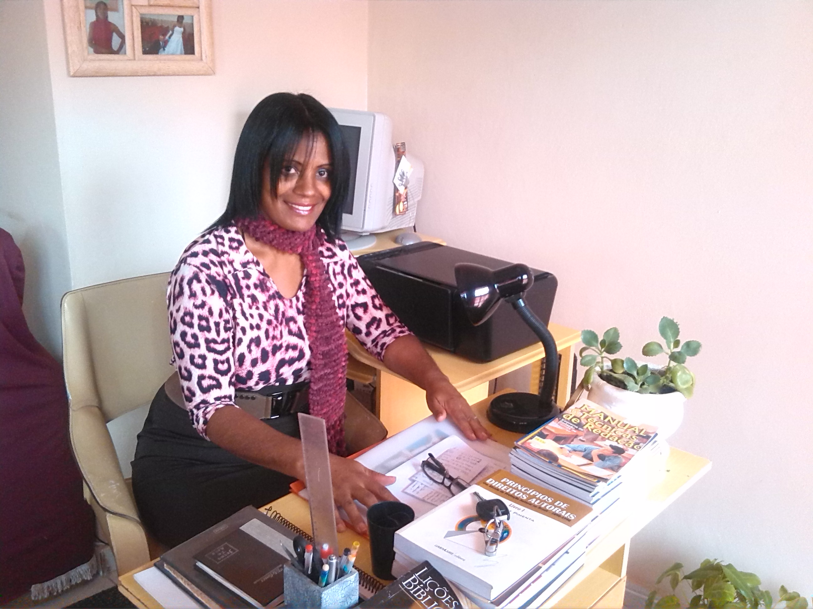

Discografia Destaque

Pelas ruas do Rio
Um álbum que captura a essência da cidade maravilhosa através de uma perspectiva espiritual e poética.
01
Alvorada no Arpoador
4:12
02
Caminhos da Lapa
3:45
03
Graça na Guanabara
5:01
Cantora • Compositora • Escritora Cristã
Música, palavra e fé transformadas em obra. Um legado de arte e espiritualidade que atravessa gerações.

A arte verdadeira nasce de um encontro profundo com o divino. Cada nota, cada palavra escrita e cada melodia composta por Wilma Machado é um reflexo direto de sua jornada de fé. Um convite para pausar, refletir e encontrar serenidade em um mundo ruidoso.
Um álbum que captura a essência da cidade maravilhosa através de uma perspectiva espiritual e poética.
Lançamento do primeiro álbum independente, marcando o início de uma voz dedicada à esperança.
Publicação de seu primeiro livro de poemas e reflexões, expandindo sua expressão artística.
Estreia do projeto intimista que une música e contação de histórias para pequenos públicos.
Um espetáculo intimista onde a música se entrelaça com histórias do cotidiano e reflexões profundas. Uma experiência de escuta atenta e comunhão.
Saiba mais arrow_forward
Explorando a palavra escrita como extensão da fé. Livros e crônicas que convidam o leitor a uma jornada de autoconhecimento e espiritualidade.
Ver catálogo arrow_forward
Iniciativa social que utiliza a arte e a música como ferramentas de transformação e inclusão em comunidades vulneráveis.
Conheça a iniciativa arrow_forwardComposições exclusivas aguardando vozes e produtores. Um catálogo rico em poesia e profundidade espiritual para o seu próximo projeto.
Leve a arte e a mensagem de Wilma Machado para sua igreja, evento ou conferência. Momentos de louvor, reflexão e beleza acústica.